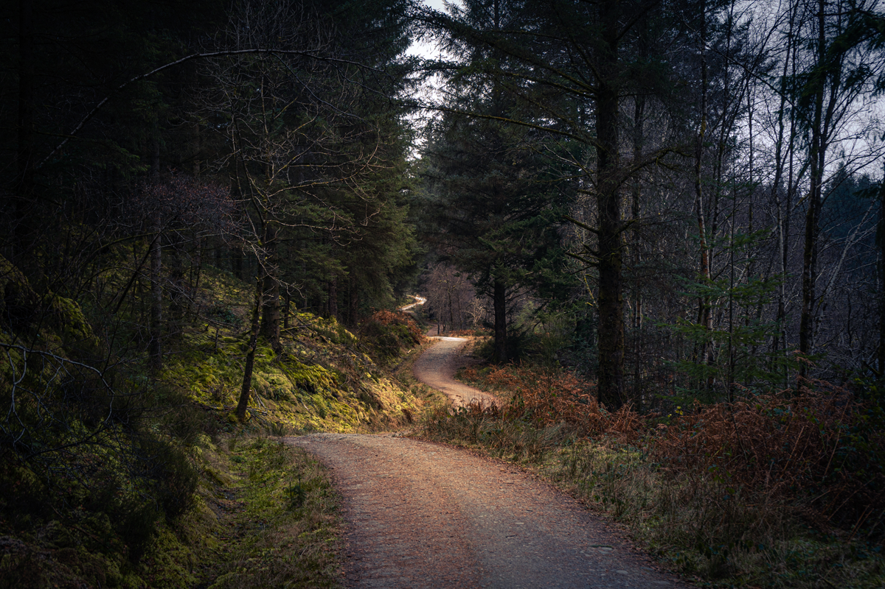

- Specialty Coffee and Tea
- Bagels, Muffins and Organic Snacs
- Music and Poetry Readings
- Open Mic Night Every Friday
Follow the Winding Road to JavaJam

54321 Route 42
Ellison Bay, WI 54210
888-555-8888